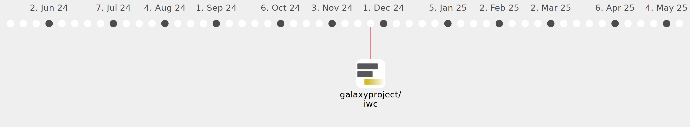

Galaxy Community Activities
PratikDJagtap
PratikDJagtap
https://github.com/PratikDJagtap
Commits all-time:
35
Commits last year:
28

galaxyproject/iwc
(28)
2d913d5
3269837
9854bd6
778407c
6a31f15
2c4742b
0bc97db
da14de7
304fb20
e9feba6
467e6ee
ee2b975
79f8303
f748aef
389c7b4
6b3c9d7
2de493b
6c64bec
7b9c98f
add5c08
2e303c4
a5b51e1
f54db71
2fbecef
2454d5b
af4ff7c
379c2e6
992886d